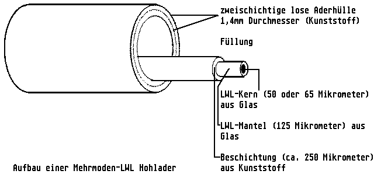

Previous
Next
TOC
Die Glasfaserverbindung (LWL - Lichtwellenleiter)
Ein wesentlicher Schritt in der Entwicklung der Kommunikationstechnik
war der Einsatz der LWL. Ein Lichtwellenleiter ist eine dünne, fle-
xible Faser aus Glas (eventuell auch Kunststoff), durch die Licht
übertragen werden kann. Die LWL-Strecke ist in drei Bereiche unter-
teilt:
Dem Sender, dem Empfänger und dem Verbindungssystem.
Der Sender wandelt das elektrische Signal in ein optisches um, der
Empfänger wandelt das Lichtsignal zurück in ein elektrisches Signal.
Das Verbindungssystem umfaßt den LWL, die Steckverbinder und even-
tuell sonstige Installationen.
LWL haben folgende Vorteile: große Bandbreite, niedrige Verluste,
elektromagnetische Unempfindlichkeit, geringe Abmessung, geringes
Gewicht, elektrische Sicherheit und Datenschutz.

Im Bereich der lokalen Netze werden Mehrmoden-Gradientenfasern vom
Typ 50/125 Mikrometer oder 62,5/125 Mikrometer benutzt. Die Bezeich-
nung 50 oder 62,5/125 Mikrometer bezieht sich auf das Verhältnis
Kern-/Manteldurchmesser.
LWL Parameter
Wellenlängen: 850 nm oder 1300 nm (Wellenlänge des Lichtes).
Dämpfung: Die LWL-Dämpfung ist proportional zur Länge des Lichtwellen-
leiters und hängt von der benutzten Wellenlänge des Lichts ab.
Typische Werte sind:
2,33 - 3,0 dB/Kilometer bei 850 Nanometer und 50/125 Mikrometer
0,5
- 0,7 dB/Kilometer bei 1300 Nanomenter und 50/125 Mikrometer
2,7
- 3,5 dB/Kilometer bei 850 Nanometer und 62,5/125 Mikrometer
0,6
- 0,8 dB/Kilometer bei 1300 Nanometer und 62,5/125 Mikrometer
weiterblättern
Kapitel Die Glasfaserverbindung (LWL - Lichtwellenleiter), Seite 1